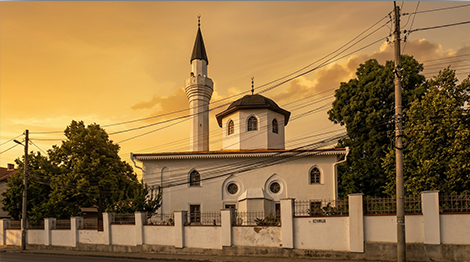

В Симферополе сохранились памятники культурного наследия крымских татар. в период Крымского ханства
здесь возникло поселение Ак‑Месджид (в переводе с крымско‑татарского — «Белая мечеть», в русских
источниках — Ак‑Мечеть), ставшее резиденцией калги (второго лица после хана).
Соборная мечеть Кебир-Джами. Считается, что именно благодаря её белым известняковым стенам
средневековое поселение получило свое историческое название Ак-Мечеть (Белая мечеть). Сегодня
мечеть полностью восстановлена и является резиденцией Духовного управления мусульман Крыма.
Крымскотатарский музей культурно-исторического наследия (ул. Чехова, 17) - главный профильный
научно-просветительский центр. В фондах музея собраны уникальные коллекции: подлинные образцы
традиционного ювелирного и ткацкого искусства, старинные Кораны, элементы национальной одежды,
филигранная медная утварь. Музей позволяет систематизировать впечатления от экскурсии и глубоко
погрузиться в этнографию крымскотатарского народа.
Спустившись к набережной реки Салгир, мы подходим к месту, которое на протяжении столетий являлось
важным духовным центром. Это святое захоронение (азиз) праведника Салгир-Бабы, жившего в XVII веке.
По преданиям, Салгир-баба был суфийским аскетом и религиозным мыслителем, который уединялся для молитв
в дубовой роще у реки. При жизни к нему приходили за исцелением и советом, а после смерти его могила
стала местом массового паломничества мусульман.

Кебир-джами

Музей культурно-исторического наследия

Захоронение Азиза Салгир-бабы